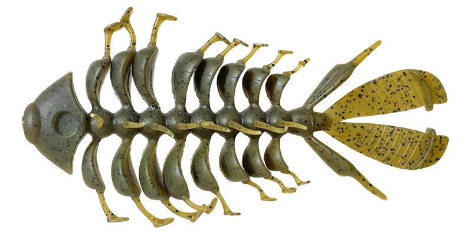
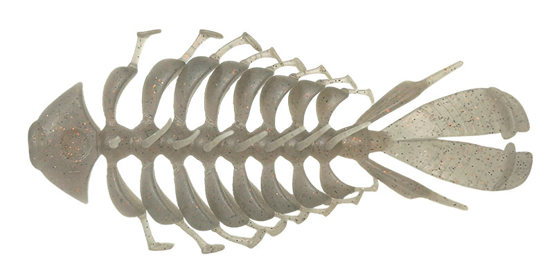
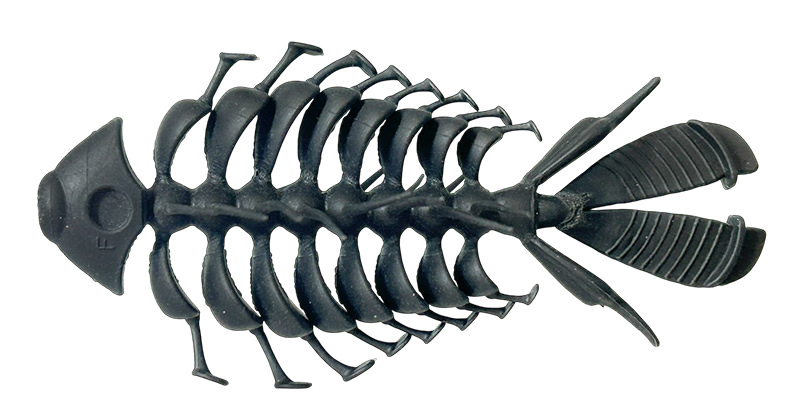
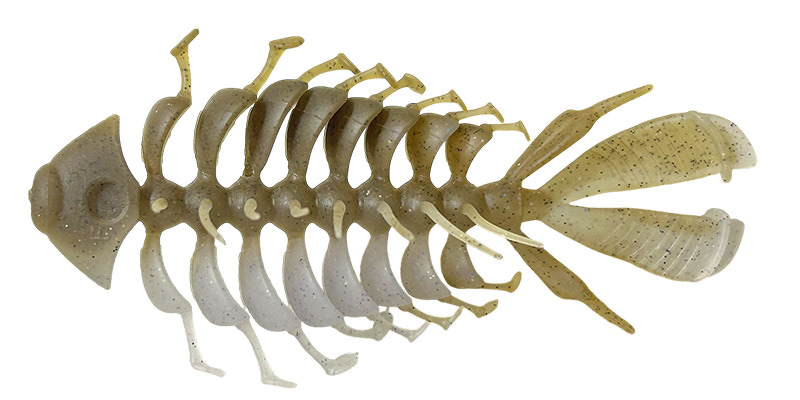

ビーストボーンエラストマー
（BeastBone elastomer）
ビーストボーンエラストマーは、イマカツの4インチのエラストマーワームです。
16本のボーン（骨）と無数のサイドヘアー、マイクロシャッドテールを組み合わせた多毛多関節系で、巻いても止めても全身から生命感が出るのが最大の特徴。メーカーが「ワームの枠を超えたソフトプラグ」とうたう新しいタイプのルアーです。

画像出典:IMAKATSU公式HP
スペック
- メーカー
- IMAKATSU（イマカツ）
- 監修
- 今江克隆
- 全長
- 4インチ
- 入数
- 1本
- 素材
- エラストマー（高浮力・ベリーソルト製法）
- 推奨シンカー
- ネイルシンカー0.9g（テール側）
水平姿勢にしたい時は腹部のボーン2本に0.45gずつ - カラー
- 全8色
- ターゲット
- ブラックバス
- 発売
- 2026年
▼今すぐチェック
ビーストボーンエラストマーの特徴
16本の骨が水をつかむ、多毛多関節のソフトプラグ
-
16本のボーンが水をつかむ
16本のボーンが水流を受けてしなやかに開いたり閉じたりし、全身をしならせながら複雑に水を押す。各ボーンのマイクロシャッドテールと無数のサイドヘアーが連動して、スローリトリーブやステイでも立体的な生命感が出る。
-
高浮力エラストマー×低重心設計
浮力の高いエラストマーに、お腹側に塩を入れるベリーソルト製法を組み合わせた低重心設計。水中で姿勢が安定し、ボーンの動きがしっかり出る。
-
見る角度で姿が変わるシルエット
横から見るとブルーギルやフナ、上から見るとエビや甲殻類のように見える。バスにベイトを特定させない独特のシルエットで、スレたバスにも口を使わせる。
ビーストボーンエラストマーの使い方
テール側のネイルシンカーホールに0.9gのネイルシンカーを入れて、スローに巻いたり、止めたりしながらボーンの動きで見せるのが基本です。
スイミング、中層をゆっくり漂わせるストローリング、ボトム、ジグのトレーラーと幅広く使えます。姿勢を水平に近づけたいときは、腹部のボーン2本に0.45gずつシンカーを入れましょう。
ビーストボーンエラストマーの得意な状況
動きの強いルアーに反応しないスレたバスや、ベイトが絞りにくい状況で出番です。
ギルやエビなど、いろいろなベイトに見えるシルエットと、止めても生き続けるボーンとヘアーの動きで、プレッシャーの高い釣り場でも釣れるのが強みです。
ワンポイント
エラストマー素材は、ほかのワームやルアーと一緒に保管すると変形や溶ける原因になります。ほかのルアーと分けて、高温にならない場所で保管しましょう。塩はFマーク側に入っているので、シンカーを入れる向きの目安にもなります。
人気カラー
ビーストボーンエラストマーの人気カラーを紹介します。

グリーンパンプキンペッパーどんなフィールドでも使いやすい定番カラー。

湖産エビエビを食べているバスに。リザーバーや湖で。

スーパーブラックシルエットがはっきり出る。にごりや暗い時間に。

エレクトリックワカサギワカサギなど小魚を食べているバスに。2トーンでよく目立つ。
画像出典:IMAKATSU公式HP
▼今すぐチェック
ビーストボーンエラストマーに似ているルアー
-
 フラックスギル
バークレイ
詳細はこちら＞
フラックスギル
バークレイ
詳細はこちら＞
ギル型の穴あきワーム。匂いと味で食わせたい時に。
-
 ギーラカンス4インチ
DSTYLE
詳細はこちら＞
ギーラカンス4インチ
DSTYLE
詳細はこちら＞
エラストマーのビッグバス用ワーム。シルエットを出して大型を狙いたい時に。
-
 ヘアリースパイダー クジャラ
イマカツ
詳細はこちら＞
ヘアリースパイダー クジャラ
イマカツ
詳細はこちら＞
同じイマカツの巨大エラストマーワーム。サイトフィッシングや大きなシルエットで見せたい時に。